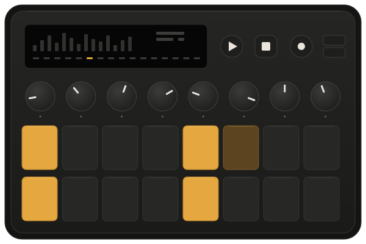
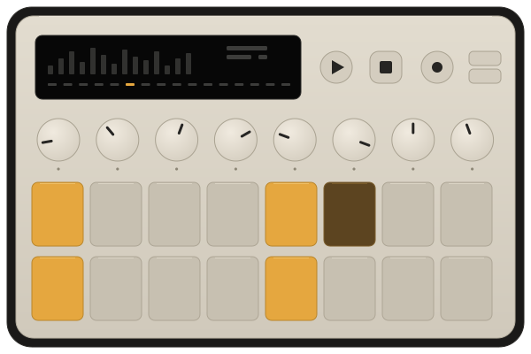
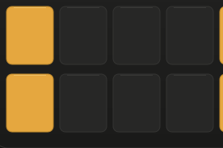
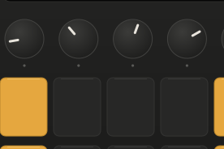
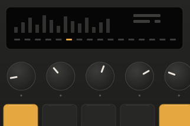

Play the idea
before itgets away.
Deck is a sequencer for the desk, not the studio. Sixteen pads, eight knobs and one small display, arranged so a pattern takes seconds to start and a few minutes to finish. No menus, and no screen to look at instead of the music.
See how it worksDeck is an illustrative product made for this template. Its specifications, release notes and dates are examples, not a real device.
What is on the desk
Three kinds of control, and each does one thing.
- Pads
Sixteen pads, in two rows of eight.
One row is half a bar of sixteenth notes, so you can read the pattern you are playing without a screen. The pads are rubber, not plastic, and they respond to how hard you play.

- Knobs
Eight knobs, one job each.
Pitch, decay, filter and drive on the first page, tone, level, pan and swing on the second. A knob does the same thing on every sound, so your hands learn the layout once.

- Display
One display that shows the step you are on.
It shows the level, the current step and the pattern name. That is all it shows, on purpose. Everything you can change is a pad or a knob.

A pattern in four moves
The whole method fits on one page.
In the box
Everything you need, and nothing you will throw away.
- Deck, in graphite or bone
- A braided USB-C cable, two metres
- A printed quick-start card, one side
- Four rubber feet, already fitted
Deck opens with four screws and a standard driver. Nothing inside is glued. When a pad wears out you replace the pad, not the instrument, and the parts list is printed on the underside.
The latest release
Firmware, kept current on the changelog.
Harbor
2 September 2026
Pattern chaining, a metronome you can hear over the mix, and a longer undo.
- Chain up to eight patterns by holding two pattern pads.
- The metronome has its own level on the second knob page.
- Undo reaches back through the last sixteen edits.